Desarrollo de los combates
Normas de combate
Durante el combate puedes elegir si controlar a un Watcher o a uno de tus amigos Yo-kai. Los demás miembros se moverán y atacarán automáticamente.
Puedes cambiar el personaje pulsando arriba / abajo en la cruceta. Además, durante la pausa táctica, puedes intercambiar los miembros del equipo de combate con los miembros de reserva.
※ Los amigos Yo-kai que no estés controlando directamente pueden vaguear durante el combate.
Terminar un combate
Cuando derrotes a todos los enemigos, ganarás el combate y pasarás a la pantalla de resultados.
En ella, tanto los miembros de combate como los de reserva obtendrán EXP (experiencia). Cuando el medidor de experiencia de un personaje se llene, subirá de nivel y aumentarán sus estadísticas.
También recibirás dinero.
Además, puede que obtengas objetos, y podrás ver las almas conseguiste durante el combate.
※ La cantidad de EXP obtenida aumenta según tu actuación durante el combate gracias a la bonificación por participación destacada.
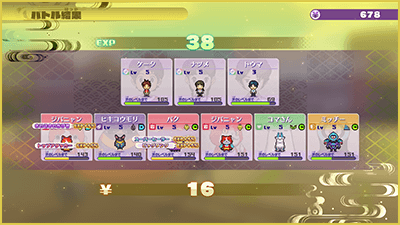
Derrota
Cuando los PV de un personaje llegan a 0, este queda fuera de combate y ya no puede pelear.
Si el personaje que estás controlando queda incapacitado, el liderazgo pasará a otro personaje automáticamente.
Si todos los miembros del equipo de combate quedan fuera de combate, perderás el combate y regresarás a ls zona abierta al estado en el que te encontrabas antes de comenzar la batalla.
※ Si pierdes, no obtendrás las almas conseguidas durante el combate.
Elementos (Fortalezas y debilidades)
Los Yo-kai y los Watchers pueden tener elementos a los que son fuertes o débiles.
Si reciben un ataque de un atributo al que son fuertes, recibirán menos daño de lo normal. Si reciben un ataque de un elemento al que son débiles, recibirán más daño de lo normal.
※ Las fortalezas y debilidades de un enemigo se mostrarán después de que lo hayas derrotado al menos una vez o después de haberle infligido daño utilizando ese elemento.
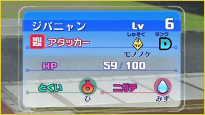
Elementos
Los elementos se muestran mediante los siguientes iconos.
- Fuego
- Agua
- Relámpago
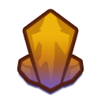
Tierra- Hielo
- Viento
- Luz
- Absorción
Objetos de combate
En las zonas donde tienen lugar los combates pueden aparecer diversos objetos útiles.
Orbes de recuperación
Cuando derrotas o haces retroceder a un enemigo, existe la posibilidad de que deje caer un orbe de recuperación. Al tocarlas recargarás parte de un parámetro diferente según su color, las esferas verdes recuperan PV, las azules, PY, y las amarillas, el Animámetro.
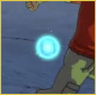
Espiritisfera
Son orbes brillantes que aparecen ocasionalmente en el área de combate.
Si colocas el marcador sobre ellas (apuntando y pulsando Ⓐ), se explotarán y activarán distintos efectos, como: Aumento de EXP, aumento de dinero o mayor probabilidad de obtener objetos raros.
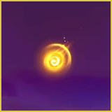
Envíos Yo-kai Net
Durante el combate, el Dron puede aparecer transportando objetos.
Puede dejar caer objetos con efectos muy útiles, como un jarrrón que genera orbes de recuperación durante cierto tiempo o un "Súper caramelo", que hace que quien lo recoja sea inmune al daño durante un tiempo determinado.
Por eso, cuando aparezca en la esquina superior derecha el mensaje indicando que el Dron ha llegado, ¡presta atención!
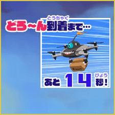
Espiritaciones
Durante el combate, los Watchers y los Yo-kai pueden ser espiritados debido a los efectos de determinadas técnicas, entre otras cosas.
La espiritación permanece durante cierto tiempo o hasta que se elimina mediante una técnica u objeto.
Mientras está activa, aparece un icono a la derecha de la barra de PV, etc...
Todos las espiritaciones desaparecen al terminar el combate.
Ejemplos de espiritaciones
Las espiritaciones marcadas con "＊" pueden ser de dos tipos:
Espiritaciones positivas que aumentan las estadísticas y espiritaciones negativas que reducen las estadísticas.
| Aumento de FUE＊ | Aumenta el daño físico. |
|---|---|
| Aumento de ESP＊ | Aumenta el daño de ataques de Yo-ki. |
| Aumento de DEF＊ | Aumenta la defensa física. |
| Aumento de DEF ESP＊ | Aumenta la defensa contra ataques de Yo-ki. |
| Aumento de VEL＊ | Aumenta la velocidad de movimiento. |
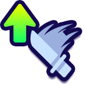 Aumento de VEL ATQ＊ |
Aumenta la velocidad de ataque. |
| Aumento de Todo＊ | Aumenta todas las estadísticas. |
| Restauración gradual de PV＊ | Restaura gradualmente la barra de PV. |
| Restauración gradual de PY＊ | Restaura gradualmente la barra de Yo-ki. |
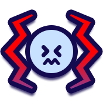 Incapacidad de actuar |
Se limita la capacidad del personaje para actuar. |
| Sellado de Yo-ki | No se pueden utilizar técnicas. |
| Ocultación | Hace que el enemigo tenga menos probabilidades de fijarse en el personaje. |
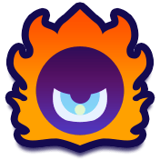 Provocación |
Hace que el enemigo tenga más probabilidades de atacar al personaje. |
| Resbaladizo | El personaje resbala, lo que dificulta cambiar de dirección mientras se mueve. |
| Ceguera | Al no poder ver, resulta más difícil acertar los ataques. |
| Confusión | El personaje se confunde y realiza movimientos extraños. |
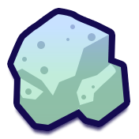 Petrificación |
El personaje queda petrificado y no puede moverse. Mover los sticks o pulsar repetidamente los botones permite recuperarse más rápido. |
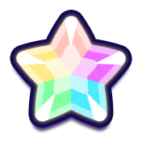 Invencibilidad |
El personaje será invulnerable durante cierto tiempo. |